Joey's Bikepacking Page | 2019 Tour Divide | The Mad Porky 2024 | Ice Divide | Western Tour of the GIT | Racoon Holler 350 | 3 Days, 3 Hundred
VideosWisconsin Ice Divide Trip First Dispersed Camp Winter Training for the 2019 Tour Divide First Experience Electronics Electronics Nitty Gritty The Bike The Stuff The Ride The Camp 3 Days, 3 Hundred | AdventuresThe Ice Divide(05/19 MADISON, WI) It seemed as if I was riding the spine of the Saint Lawrence Divide on an old logging road in a remote section of Wisconsin's Northwoods. It was not hard to imagine that the water to my right was draining toward the Atlantic carried by the Wolf and Fox Rivers to the Great Lakes and the Saint Lawrence seaway. The small stream of water on my left eventually reaches the Wisconsin which empties into the Mississippi and the Gulf of Mexico. The remote and rocky road made this portion of this six day tour especially rewarding. 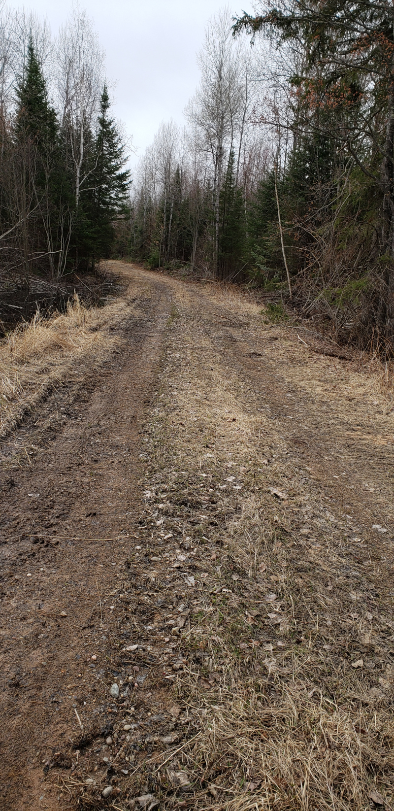 This trip started and ended in Madison Wisconsin. The first and last days were spent on quiet paved roads. Most of day 2 was completed before things started to get interesting with regard to road surface. The bike path out of Wittenberg, Wisconsin was a bit rough but then at a road crossing appeared to disapear completely, ending at a farm field. Attempting to follow the line on my GPS unit, I ventured into the field and soon found myself mired in a deep muddy rut left by a farmers pickup truck. But wait, I'm not exactly on the line. When I look to my right there appears to be a trodden lane through the field. It made me smile that aligning myself to the GPS line placed bike and rider in the middle of this vague path. At the far end of the field the path resumed and continued to improve as I headed north.
Day two would also be my longest day of the tour with 127 miles covered. After improving greatly, the bike path known as the Wouwash Trail would fork and become a grass path again. Nevertheless after making my way to Antigo, I sat for a wonderful dinner at the El Tequila restaurant. Evening was pressing so pedaling resumed with the intent of reaching Jack Lake County Park Campground. The original plan was to disperse camp at Peter's Marsh and when I pedaled past this wildlife area, it looked inviting. Still I wanted to tack on some extra miles today before the cold rain of the following day. The paved road gave way to gravel and then apparently a driveway. Mindlessly following my GPS, I proceed and see that a grass track cuts between a house and an out building into an apparent wilderness. I considered stopping but it's 6:30 PM and I decided not to interrupt their dinner to ask about this potential public right of way. Pressing on it was suddenly remote, the track was rocky and with steep repetitive hills. I smiled widely as the sun touched the horizon in front of me. Gorgeous views of wetlands and waterfowl abound. Furthermore, I'm on track to make it the campground in adventurous style, or so I thought. 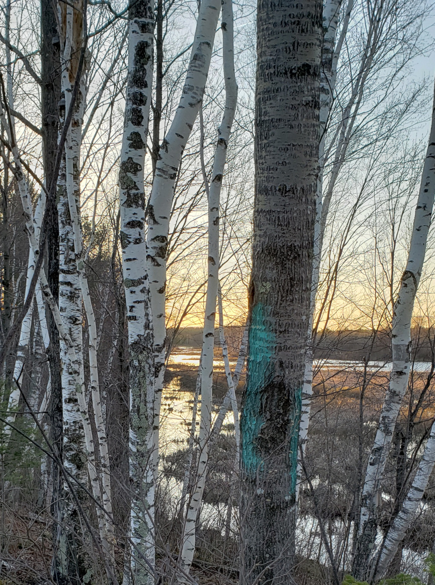 After joining with a logging road the rough rocky track becomes a gravel road which should head straight north to camp. We have had a good deal of rain in Wisconsin so it was no surprise that I might have to cross some water to get there -- it won't be the first time on this trip. Upon inspection of the stream of water flowing over the road, I decide to turn back. It's not wide but too wide to step over. It is clear, flowing fast and I can't see the bottom. The stream was created when a large pond broke free of it's banks. I think I made the right decision to turn back and used my phone (OSMand app) to find another logging road to the highway. I'd just have to take the highway to Jack's Lake. That, as it turned out, was pretty awesome. The logging road, although active, was of course very lonely at 8 PM in the dark. The highway, although a major two lane road serving the region, was very quiet. I arrived at the campground in no time at all and discovered it had not yet opened for the season. It didn't take long to find a spot away from the locked-up buildings of the campground to disperse camp a second time. The third day was fun and frustrating. Early in the day I cycled a rough old logging road that appeared to be the spine of the Saint Lawrence Divide. Later I would turn back multiple times attemptimg to find a passable route toward Pine Lake. I never made it to Pine Lake and looking at maps after I returned home it appears the way I choose was impossible. It used snowmobile routes, large sections of which revert to swamp land after the thaw. It was also really cold and as the day wore it began to rain. After a rehabilitating meal in Three Lakes Wisconsin I made my way to Woodruff where I stayed the night in a hotel.
The ride from Woodruff/Minocqua to Medford was perhaps my favorite day. It was hard at times, often remote, Tim's Hill was really fun and the Rail Trail Cafe in Ogema was awesome! The day started with temperatures near freezing and with a light rain. The rail trail (Bearskin Trail) from Minocqua to Tomahawk was lovely but super soft, making progress slow. I stopped to have lunch having spent hours to make only 30 miles. I was so frozen I couldn't get my fingers to function well enough to get my helmet off. The proprietor at Outboards Bar and Grill had to undo the latch for me. She quickly and kindly supplied me with soup and sandwich as well as one to go. At the time I was thinking I'll eat the giant BLT she handed me at the top of Tim's hill. It was noon and it felt like an entire day of riding was still ahead of me. The route to Ogema is a fantastic mix of quiet paved and gravel roads. One section felt very remote and was particularly lovely. One leaves the gravel behind for county roads on the approach to the highest point in Wisconsin, modestly named Tim's Hill. Indeed the whole area around Tim's hill is rolling hills resulting in one short steep climb after another before the base of Tim's Hill is reached. By this route the base of the climb to Tim's Hill is close to the top so the last throw was quite easy. The hike to the top of the observation tower was well worth it. 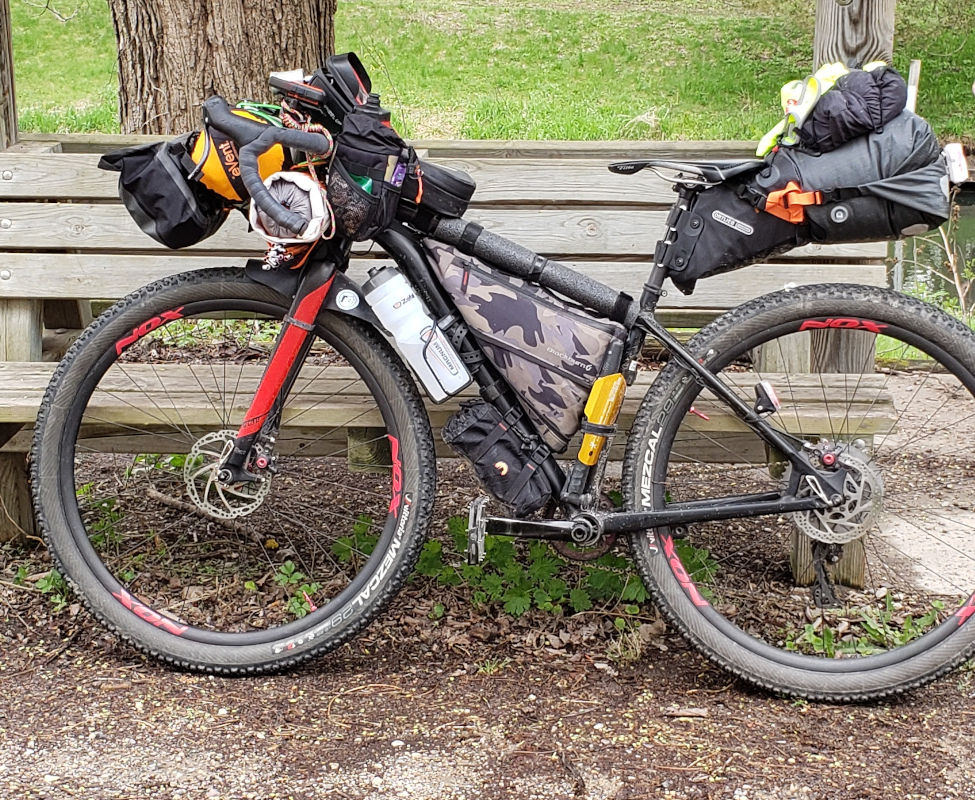 I wasn't able to enjoy my cold BLT at Tim's Hill. I tried but the cold wind made sitting still impossible. As a result, I was very happy to stop at Rail Trail Cafe in Ogema. Dawn made sure I had hot cider, a hot BLT and pie. The place was lively and stories and jokes were shared with the locals. There's another 20 miles of rail trail (the Pine Line) to Medford which I had expected to be soft and slow. The locals tell me they just put new granite stone down on it. Not sure what this will mean for me but off I go. It turns out the gravel rolled well and I made the 20 miles to Medford for my second night in a hotel before night despite the slow start to the day.
Day five from Medford to Castle Rock County Park is 112 miles and the sky is clear. I'm finally able to stow the rain coat and enjoy some good rolling on gravel roads. The roads became paved and a tailwind pushed me toward Necedah where I met Grant. Grant also lives in Madison and is well acquainted with Isaac Neff and his awesome bike shop, Neff Cycle Service. Earlier I passed though the Necedah National Wildlife Refuge and the Sandhill State Wildlife Refuge. Some highway and some quiet paved roads lead me to Castle Rock County Park where I camped along the Wisconsin River and enjoyed a fantastic sunrise. One of my favorite roads is Burma Road. I rode it several times last year. Never once have I seen a tire mark or any sign of another cyclist. So it was a fluke I happened to record another cyclist riding a hill on a portion of this road. I fastened my phone on a sign to record myself on this small gravel climb. When I turned around, out of camera view, I saw the other cyclist and we chatted briefly. Pretty weird but this was made more probable by the opening of the Great Sauk Trail which can be reached from the southern end of Burma Road. In all this trip was 613.7 miles with 13,563 feet of climbing. My longest day was 127.2 miles. Everything worked -- except my feet were cold for two days. I'll have to find shoe covers for my next adventure which is the Tour Divide in June. 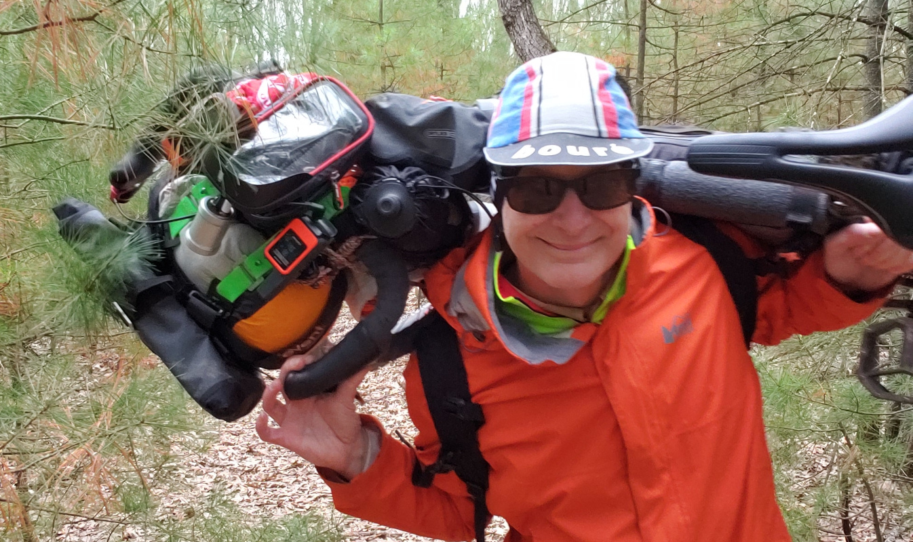 |
Things to knowThe RouteRide With GPS route from Madison, Wisconsin roughly following the Saint Lawrence Divide and portions of the the Ice Age Trail. Be aware that the section of this route between Monico and Pine Lake was impassable. CampingCamping opportunities are indicated on the Ride With GPS route. Carry your bike when accessing sites on hiking trails which do not allow bicycling. SummaryDay 1 Madison to Coloma, 103 miles, 3,419 ft climbing Day 2 Coloma to Jack Lake, 127 miles, 2,440 ft climbing Day 3 Jack Lake to Woodruff, 89 miles, 1,647 ft climbing Day 4 Woodruff to Medford, 100 miles, 2,220 ft climbing Day 5 Medford to Castle Rock, 112 miles, 1,107 ft climbing Day 6 Castle Rock to Madison, 82 miles, 2,730 ft of climbing |
Western Tour of the Grand Illinois Trail(09/18 MADISON, WI) I cheated and cut-off the portion of the Grand Illinois Trail (GIT) which passes through Galena in favor of some amazing gravel roads. My route 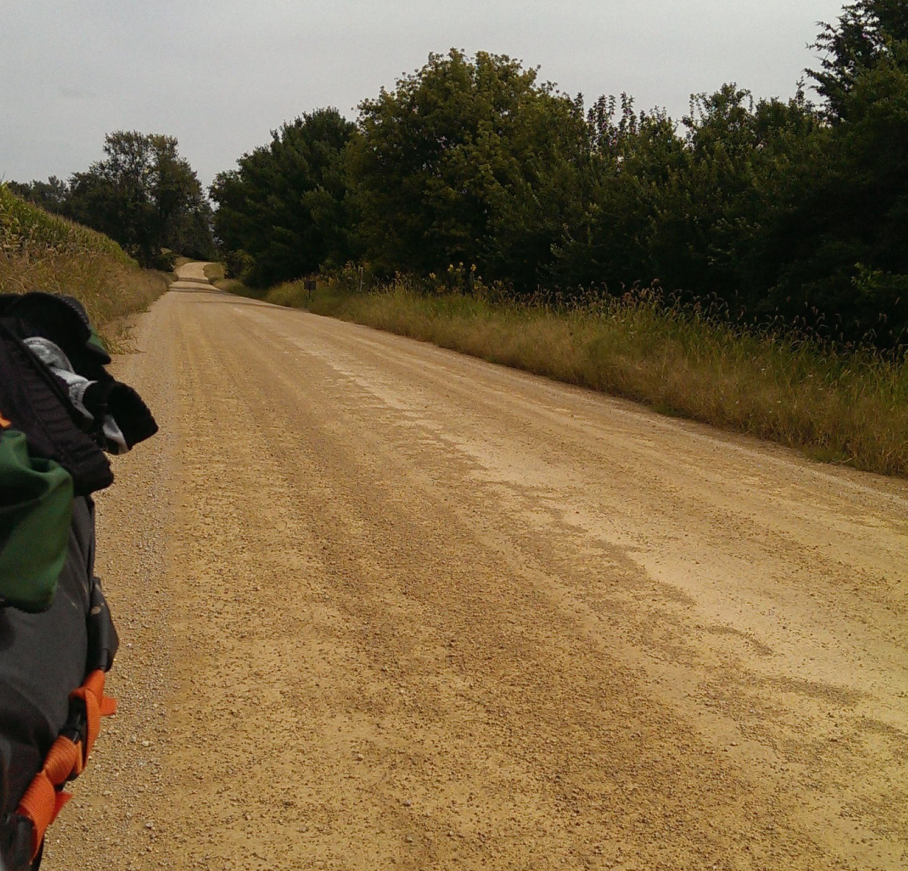 included a couple of long climbs, the steepest must have been over 15%. The steepest climb on the first day was on Pin Hook road which was mostly unpaved and included some soft and slightly rutted sections but nothing my mountain bike tires couldn't handle. That climb brought me to a ridge which was more or less followed until the rapid drop down another gravel road, Mill Hollow Road. All this made for the perfect start to what would be smooth tour. For me, it would make for over 200 miles of the GIT ridden this year.The six day, 466 mile tour featured lots of bike trail, paved roads and gravel roads. The state park camping along the way was really nice -- even blush by Wisconsin standards. The route was designed to include some single track with a day off to check out trails just west of Peoria and a half day of riding to check out the Illiniwek trails along the Mississippi near the Quad Cities. The Illiniwek Forest Preserve is managed by Rock Island County and includes camping, hiking trails and mountain bike trails. The camping is right on the GIT route which here is on the Great River Trail. My site was right on the Mississippi and included an amazing sunset. The mountain bike trails there are mostly easy to intermediate and include plenty of flow. I walked to the overlook spot on the trails which were closed for maintenance at the time. Just 50 miles to the north is the Mississippi Palisades State Park which has a large campground with good tent sites. Both camping spots include showers, however, at Illiniwek there's an important wrinkle cyclists must consider. 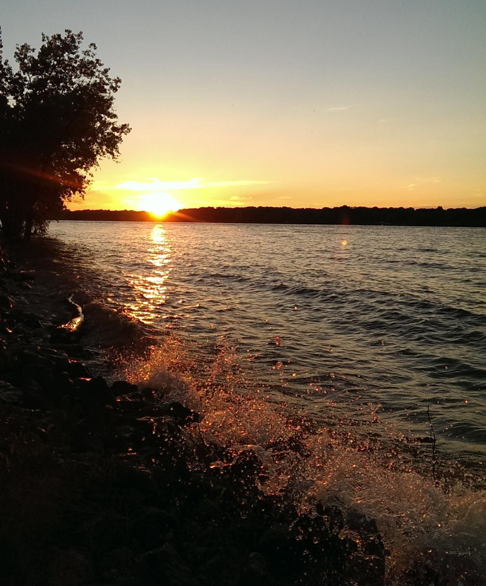 The camp host closes shop at 4 PM on weekdays and the shower building requires a key from the host. Because I wanted to spend a 1/2 day checking out the trails, I was in well before 4 and enjoyed a nice shower at the end of a beautifully easy day biking along the Mississippi, enjoying the views of white pelicans and egrets along way. Although due to poor signage a few extra miles were spent enjoying rolling hills on gravel roads. With both a phone and a Garmin Inreach Mini to guide me, this was not a costly detour.At mtbproject.com one finds two places to ride single track just west of Peoria, Illinois. The Jubilee College State Park and the Wildlife Prairie Park. The tent camp sites at Jubilee are in the open, relatively bug free and away from all the noise of the other large R/V camping areas. This state park also includes a nice shower building which is an easy walk or bike ride away from the tent camping area. There are cabins and tent camping areas at the Wildlife park but I did not explore these. The trip from Illiniwek to the mountain bike trails at Wildlife Prairie park was a marvelous adventure. Still on the GIT, this time following the Hennipen Canal Trail, I found the many sightings of Herons and wondrous engineering to be amazing. The Hennipen Canal crosses streams which means they needed to build a bridge for the canal water to pass over stream water. Almost impossible to photograph, these bridges are a wonder to see and worth the trip on their own. Additionally this western part of the Hennipen Trail passes through almost no towns and includes numerous deer, herons, white pelicans, frogs and other wildlife, making this section of the GIT one of the most enjoyable I've ridden. Admittedly, it was a weekday in September but I was surprised to encounter no other cyclists, just a few people walking or taking a coffee break no more than fifty feet from a parked car. 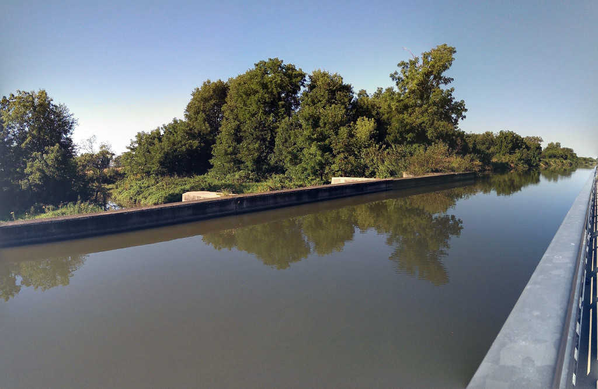 From the Hennipen south to Brimfield, Illinois there were a few surprising hills. I was expecting it to be flat with, perhaps, a few rollers. Imagine my surprise when encountering 15% or more grades on gravel roads! There are a couple of miles of significantly rolling terrain on my chosen route south which was designed to use the most obscure roads without adding too many miles. No question this added some challenge but also some interest -- I'd most definitely take this route again. In Brimfield a second lunch of pizza and salad was in order as well as stocking up for meals in camp. I found the chain of Casey's General Stores to be worthy stops and the one in Brimfield was no exception. 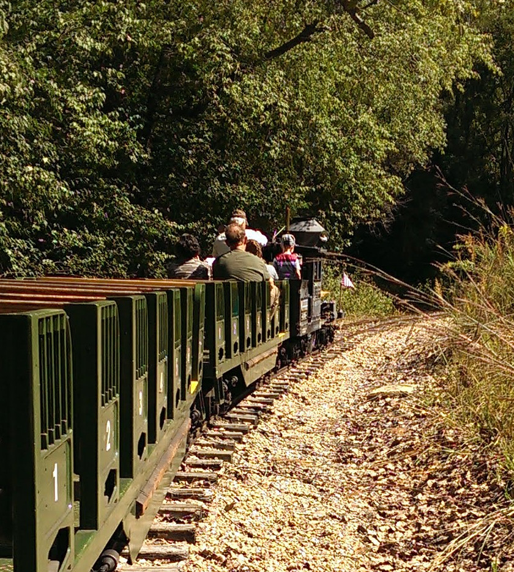 A solo rider rolling into small towns with stuff strapped here and there on a bicycle might raise some eyebrows. This occurred to me when, just as I sat down to enjoy my pizza in Brimfield, a police officer ventured over to ask me about my trip. Perhaps he was just being friendly or was he gathering enough facts to put the mind of a concerned citizen at ease? More pressing matters interrupted our very friendly conversation and off he went before I could find out. It's funny how bikepacking setups make you look a bit like a vagabond, not that we care but perhaps others do. Sixty years ago, hobos were not an uncommon sight along rail and canal routes, perhaps some of the older residents have retained a suspicious eye for those without homes or visible means of support. Riding the single track at the Wildlife Park is amazingly fun even on a fully rigid mountain bike with drop bars. It would be more fun ripping the downhills with a suspension fork, for sure! Thanks to local trail steward Steve for guiding my playtime and helping to keep these trails in awesome shape. He also confirmed what I suspected, the multiuse trails at Jubilee College State Park are mostly unloved and horse trodden. 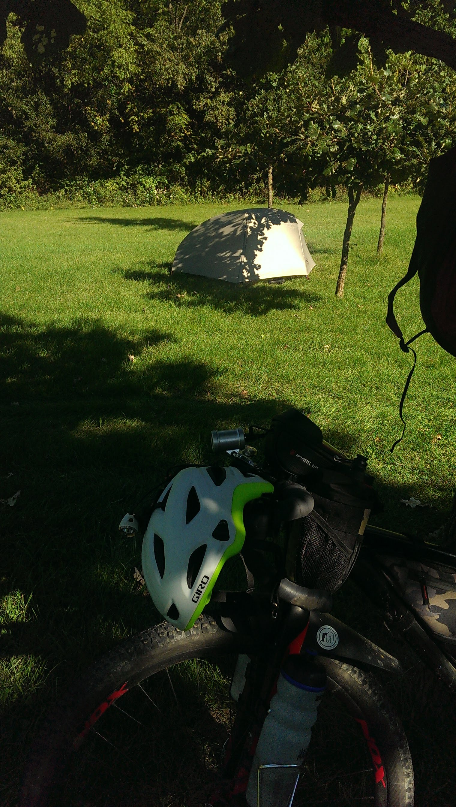 After a day of goofing off at the Wildlife park near Baraboo, I headed back north to the Hennipen Canal State Trail. Along the way I got another look at a few rolling hills and gravel climbs, these were not nearly as steep or numerous as those just a few miles to the west along the route I took south. This route also took me on the Rock Island State Trail which like most in Illinois was in good shape with a firm gravel surface. Strangely enough, it requires an on-road detour around a natural area called the Rock Island Trail Nature Preserve. I almost chanced it by going around the barrier but remained respectful of local management instead. Glad I did because at the northern end of the preserve property the trail was hopelessly overgrown with weeds. I found the Hennipen Feeder Canal trail to Sterling to be rough going. The surface was full of debris and while bunny-hopping fallen branches on a fully loaded bicycle is fun, it takes energy. Pushing a bit too hard and not stopping to fuel properly took a toll in the heat making me a bit cranky when I arrived at While Pines State Park. It required two long climbs to sort out how to get to the camping area to find the camp hosts. I might have snapped at the people at the lodge regarding the lack of proper signage but that was just low blood sugar talking. When I did finally make it to the camp-host site, no one was home so I just set up in a spot nearby where I enjoyed yet another state park shower. All of the Illinois State Parks I've visited thus far have great shower houses where one can take a shower and wash out their cycling clothes. By the time I set up camp, showered and had ramen for dinner, it was dark and the end of a satisfyingly long day and the beginning of yet another star-filled night. 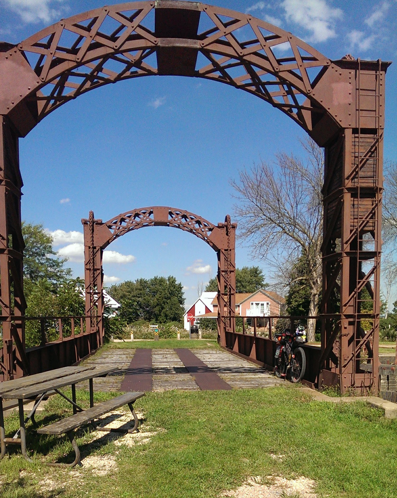 Joyous was the ride from White Pines to home in Madison. Plenty of smooth gravel road with long and beautiful views of the yellow, green and brown of farms fields with crops taken in and crops ready for harvest. I started the day in camp with two helpings of oatmeal, a cup of sliced peaches and coffee. About six miles later I was sitting in Polo eating bacon, eggs and hash browns. At the Mason restaurant in Polo I snarfed my second breakfast and took a BLT to eat later. Breakfast plus a BLT for later was a move I picked up from reading posts from riders doing the Tour Divide. It served me well days earlier as it did on this, the final day of my 466 mile trip. I really enjoyed talking with the police officer in Brimfield and fellow campers along the way. Others helped me on my way such as the farmer who drove out of his way to tell me the grass track I was facing at the end of a gravel road was indeed passable. In camp at Jubilee, Tom was up from North Carolina on his new touring Harley. The gear we carry is of course similar as is the open view of the world we have as we cycle -- at very different speeds of course. I'm guessing he prefers to avoid the gravel roads while I tend to enjoy them, even though progress is a bit slower. He was glad to be missing Hurricane Florence which was swirling around his home at the time and happy to enjoy the clear skies and star-filled nights in Illinois during a new moon. Tom shared with me his amazing experience as a escort for those running across the country to honor our fallen vets, https://www.runforthefallen.org/. For years now the fact that we are still at war and still loosing our young people to war has fallen from the headlines. Listening to him recount his experience made me wonder why are we still at war and wonder if we will ever be at peace again. Soon an entire generation of Americans will have never lived in a county at peace. 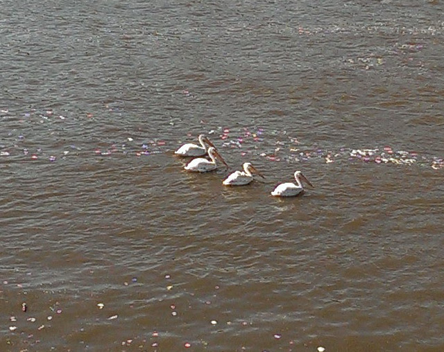 On this western section of the Grand Illinois Trail I came upon only one other touring cyclist. I was a little surprised by this, however, the GIT spans 535 miles of bike trail and roads so even if there were a hundred people on it, the chance of running across any one of them isn't terribly high in the hundred plus miles toured. The GIT is a grand idea more than a trail. A few signs mark the way but are not at all useful for navigation being too infrequent and sometimes obscured by weeds. There is a route you can follow with your phone and an app called Ride with GPS. This works well except when it doesn't, which was case between Savanna and Hampton. Still just pausing a moment to study the map is all it took to get back on course. Be sure to download the route to your phone before heading out and it's a good idea to have a backup that doesn't rely on your phone. On long days I had no trouble keeping the Garmin Inreach Mini and my phone charged using the dynamo-hub on my bicycle but I did carry a cache battery just in case and used it to recharge lights, my phone and the mini on the short day and the day off at Jubilee/Wildlife. 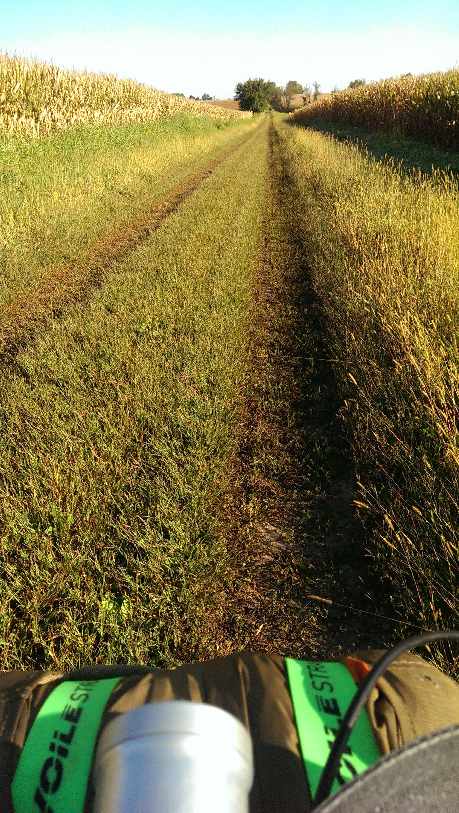 Illinois seems to have a lot to offer the touring cyclist looking to get off the pavement, at least some of the time. The state parks are awesome and numerous. Having a shower at the end of the day made this feel like a luxury tour. The bike trails in Illinois are well maintained. Even though the Hennipen Feeder Canal trail was full of debris, one could tell this was very recent because the grass was cut back 10 feet on both sides of the trail in most places. Unlike the Badger Trail in Wisconsin where 5 foot tall weeds on the side of the trail drooped over the path. Finally, Casey's General Stores are scattered throughout along the route and make for great places to refuel and stock up for camp. With a few tweaks to the official GIT route, one could replace some of the paved roads with gravel alternatives to enhance the adventure of riding the GIT. I certainly enjoyed dropping down from the ridge on a gravel road with a 15% or more grade toward Palisades State Park. I've now ridden the portions of the Grand Illinois Trail through the western suburbs of Chicago, up along the Fox River, up near the Wisconsin boarder, west to the Mississippi and back east along the Hennipen Canal State Trail. The later and the Hebron Trails are my favorite sections. While the surface of Hennipen is inconsistent it makes up for the quality of the ride with amble doses of isolation and wildlife. The Hebron Trail flows through a different environment but is enjoyable for much the same reason. If you're planning a trip on the GIT, based on my experience, it's a good idea to plan to visit a few Illinois State Parks along the way. |
Things to knowThe RouteRide With GPS route from Madison, Wisconsin to Mississippi Palisades State Park in Illinois. Includes the Badger State Trail, the Jane Addams State Trail, quiet paved roads and gravel roads. Ride With GPS route from Pallisades State Park to Jubilee College State Park between Brimfield and Kickapoo Illinois. This covers days 2 and 3 with an overnight at Illiniwek Forest Preserve. Ride With GPS route from Jubilee College State Park to White Pines State Park southwest of Oregon, Illinois. If you go save yourself some climbing and check in with the camp host instead of going down the hill to the main entrance. Ride With GPS route from White Pines State Park to Orangeville, Illinois. The rest of trip follows the Jane Addams and Badger State Trails back to Madison. Ride With GPS route from Jubilee College State Park to Wildlife Prairie Park. Worked to keep camp at Jubilee and play at Wildlife because there's only 8 miles between them. SummaryDay 1 Madison to Palisades, 95 miles Day 2 Palisades to Illiniwek, 55 miles Day 3 Illiniwek to Jubilee, 100 miles Day 4 Jubilee and Wildlife Playtime, 25 miles Day 5 Jubilee to White Pines, 105 miles Day 6 White Pines to Madison, 95 miles | |
Racoon Holler 350(07/18 MADISON, WI) The racoon stopped mashing its teeth into my dry bag for a moment to look up at me before resuming the all out effort to get to my food. It was around midnight and I had just fallen asleep when I awoke to the loud scraping sound. I grabbed my light which also served as a tail light and flooded the picnic table with red light. The racoon had taken the bag from the table and was on the ground attempting to mash its teeth into the bag. When I told it to stop, it ran off. 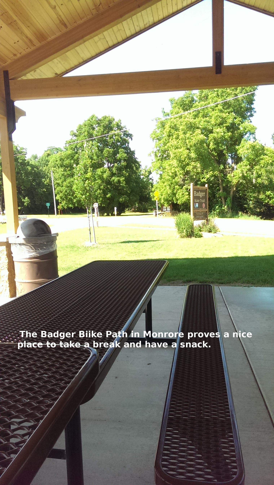 I presumed it would return but I laid back down and gazed at the stars from the comfort of my sock-like tent. I might have drifted off because I only vaguely recall hearing the mashing sound once again. The bag contained food which is replaceable but if the animal dragged off or destroyed the bag I'd be in a fix because it is needed to carry gear. As I left the tent the racoon took off a second time. I placed the dry bag in the restroom building for the rest of night and it was not disturbed again. A few short hours later I got up to begin day 2 of this 350 mile, 4 day trip to see my sister. My sister and I were planning a short bikepacking trip which will be a first for her. During my visit we worked out a few of the details such as how to strap dry bags to the bike so that they don't come off and send you over the handlebars. I would discover in the morning after the midnight racoon visit that my own dry bag was punctured by the animal. With nothing but good weather forecast, this was not a concern. 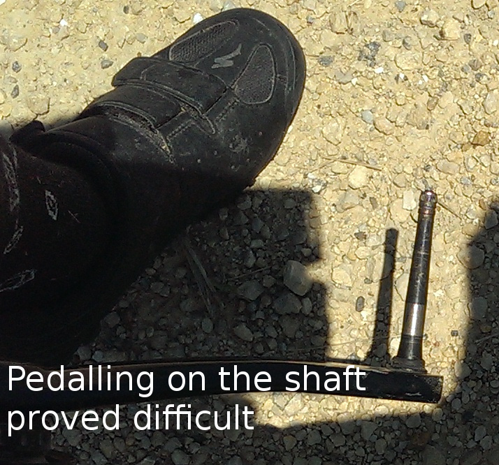 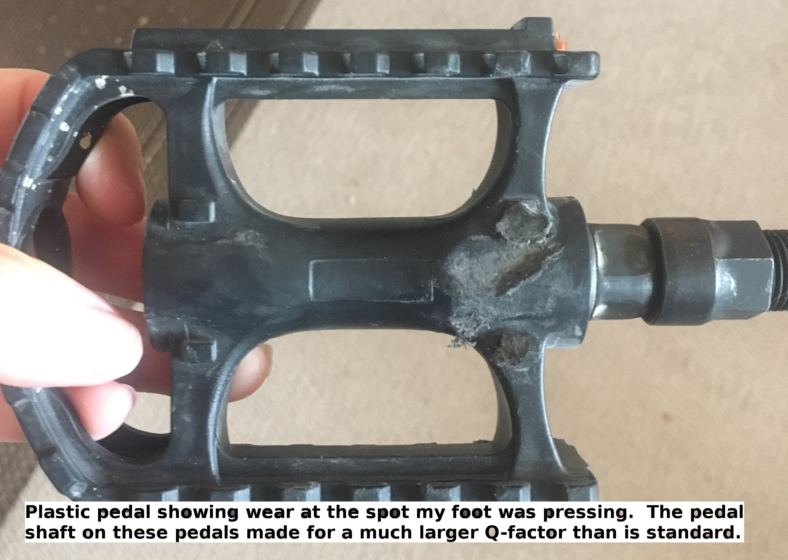 With about 50 miles behind me on the first day, the left pedal came apart. This type of pedal, the Crank Brothers Eggbeater, has been known to do this. I tried getting it back on but that wasn't going to work so I pedaled the shaft of pedal. This was not easy because it was slippery and tapered so that my foot would slide off at the slightest pressure. After about 10 miles of this, I found myself at a crossroads both literally and figuratively. I could continue to the east on gravel road and stay on route or divert onto a paved road to the west in the hopes that the small town on the horizon would have a hardware store or possibly even a bike shop. I didn't know anything about the town indicated only by some trees and a water tower when I started off to the west. Fortunately, upon arriving at a convenience store I met the town's Chief of Police who offered me the use of pedals from any one of a number of impounded bikes. One problem we both recognized immediately was neither of us had a pedal wrench. A pedal wrench doesn't work with the Eggbeaters so I could be forgiven for not having one. Everyone at Forreston Village Hall was so kind and looked high and low for tools that might work. While the search continued at Village Hall, I wandered into Koeller Forreston Hardware where Gary made things happen for me. With his awesome assistance I was back on the road with a new pair of basic plastic pedals with an extremely wide Q-factor. Admittedly, the roughly 100 miles logged on these pedals were difficult but they got me to Chicagoland where I obtained a new pair of Crank Brothers Candy pedals. 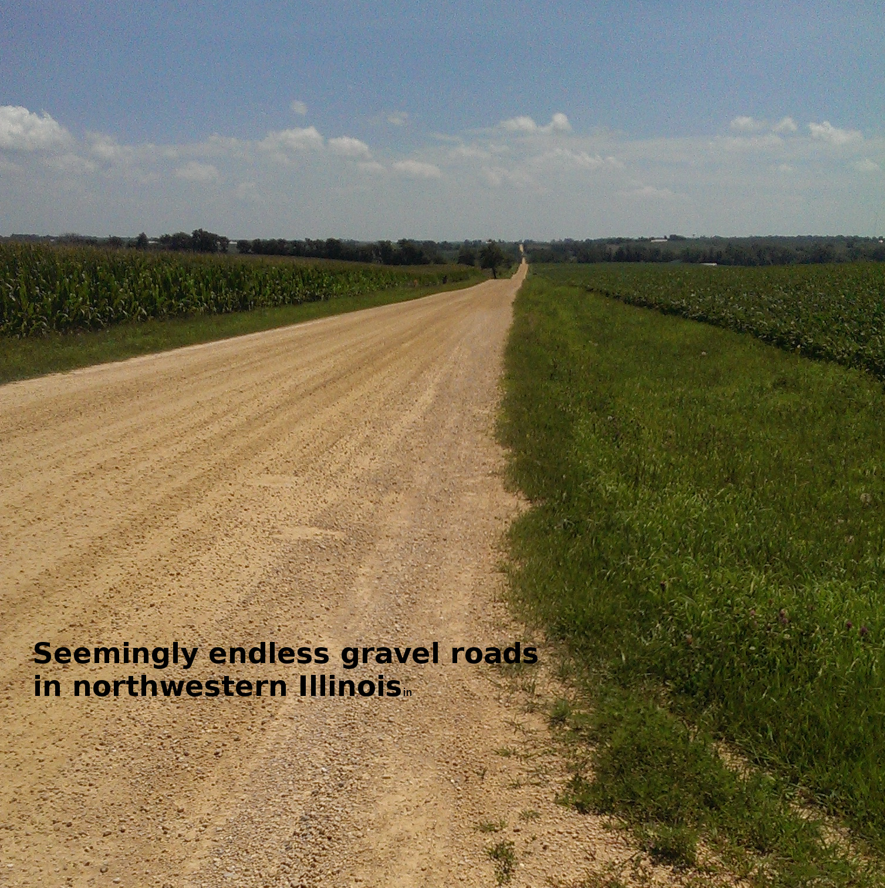 The Bike Hub in Glen Ellyn is an awesome bike shop. Mark, the owner, not only fixed me up with new pedals he checked over the bike and replaced some failing bearings in the bottom bracket. This was just what I needed in order to have a relaxed evening with my sister Helen. The new pedals also ended the problem with cyclist's palsy experienced in Sycamore during lunch. Being unable to stand comfortably on the plastic pedals had me locked into one riding position which apparently put stress on the ulnar nerve in my hand resulting in temporary paralysis and spasm. This trip included a long list of bike paths in Wisconsin and Illinois including the Badger, Jane Addams, Great Western, Prairie Path (Geneva Spur, Aurora Spur, Main Spur & Elgin Spur), Fox River Trail, Prairie Trial (McHenry Co), Hebron Trail, Long Prairie Trail, Stone Bridge Trail and Sugar River Trail. All except the Aurora Spur were intended and McDonald's gets the blame for that one. Wanting to contact home, I connected to the WiFi at McDonald's in Oregon, IL. In minutes the WiFi drained both phone and attached auxiliary batteries in what was apparently a series of failed attempts to download the YouTube app. This was the second time McDonald's drained my battery, the first was in Arkansas and also in the middle of nowhere. Next time I'll seek out a public library instead. Fortunately for me the extra credit on the Aurora Spur resulted in only a 10 mile addition to what would have been a 75 mile day. 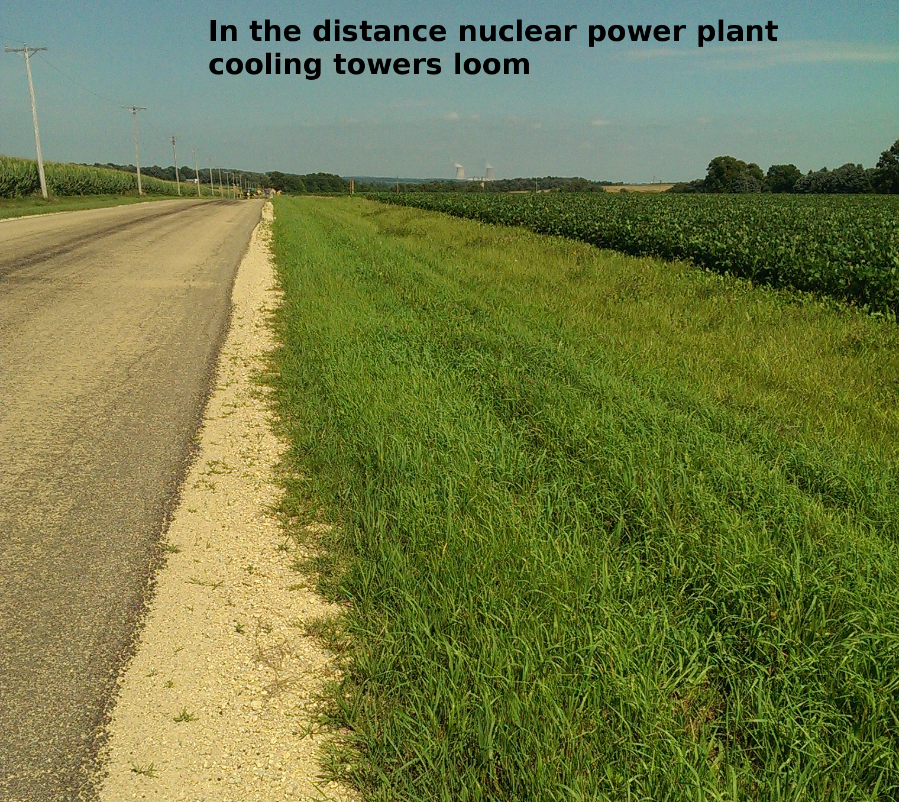 Riding bike paths is a joy. There's the stream of smiles traveling toward you, the wildlife scampering off the path and the missing tension of vehicles approaching from behind. Even in suburban Chicagoland, a deer was spotted. There is of course no shortage of smaller creatures and interesting birds such as Baltimore Oriels and Sandhill Cranes. My favorite trail was the Hebron Trail. It provided varied terrain with long and open views of grasslands. Except for the Hebron, riding bike paths results in the surreal sameness of riding for hour after hour through a tunnel of trees. With heat in the high 80's and open farm fields all around, moving steadily over gravel in the relative cool of shade was not a bad deal at all. My least favorite trail was the Long Prairie Trail west of Harvard, IL. There's no good way to get to it and it is apparently the poster child for why rural bike paths should not be paved. The cracked and inconsistent surface of this trail proved a good test for the attachment of my gear forcing me to stop several times just to check on things (everything was fine). This jarring was followed by a joyous trip on the Stone Bridge Trail which is unpaved and in great shape just as was found on all of the unpaved bike paths of Illinois. The Badger trail in Wisconsin was the only unpaved path in need of maintenance and I'm happy to report that upon my return the DNR crews were out cutting the knee high grass and filling holes, a few of which could swallow rider and bike whole. 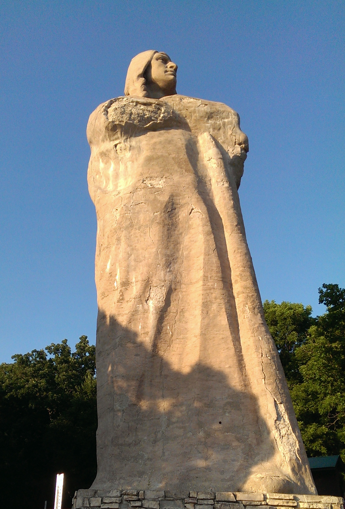 The final night of camping was interrupted by the sound of five racoons sniffing through my stuff and attempting to get to the food safely locked away in a cooler kindly provided by the camp hosts at Hononegah Forest Preserve in Winnebago County Illinois. This seemed like a fitting way to start the final day on this 350 mile route of mostly bike path in Illinois and Wisconsin. If you should ride this or part of this route be sure to check the Things to know column when planning your trip. |
Things to knowThe RouteRide With GPS route with camping alternatives indicated. You can make this a six day trip to break up the two 100 mile days. Add overnights in Orangeville and on the Hebron Trail to keep the mileage in the range of 50 to 75 miles per day. The route includes some gravel roads which may not be fun on a road bike with thin tires. Otherwise the route is suitable for touring bikes of all kinds. Be mindful of your supplies and especially water. There are long stretches without services of any kind. I didn't check it out but there is camping at the Sugar River Forest Preserve. The location is indicated on the Ride With GPS route map. Be sure to stop at the Bike Hub in Glen Ellyn to get your long distance rig checked out. The location of the shop is indicated on the map. CampingBike camping is allowed along the Jane Addams Trail in Orangeville, Illinois at the trail head, call 815-789-4623 for details. There's a patch of grass, a shelter, pit toilet and water. Camping is allowed specifically for cyclists along the Hebron Trail at the North Branch trail head near Keystone Rd. There's a patch of grass, pit toilet and water, call 815-338-6223 to arrange. BE SURE TO CHECK BEFORE MAKING PLANS and CALL AT LEAST 7 DAYS IN ADVANCE. Camping at Lowden State Park in Oregon Illinois is very nice ($10.00) but be prepared for bugs. During the week it was pleasantly quiet and a joy to tour by bicycle. The park includes some awesome views of the river and an amazing sculpture of Chief Blackhawk. The Hononegah Forest Preserve contains a large camping area. There are no showers but the hosts are awesome and offer sites which are nice and spacious. Out of state bike campers could find themselves paying $25 or more for a site which is the only downside. |
|
Pictures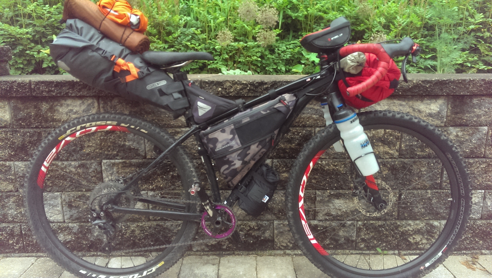 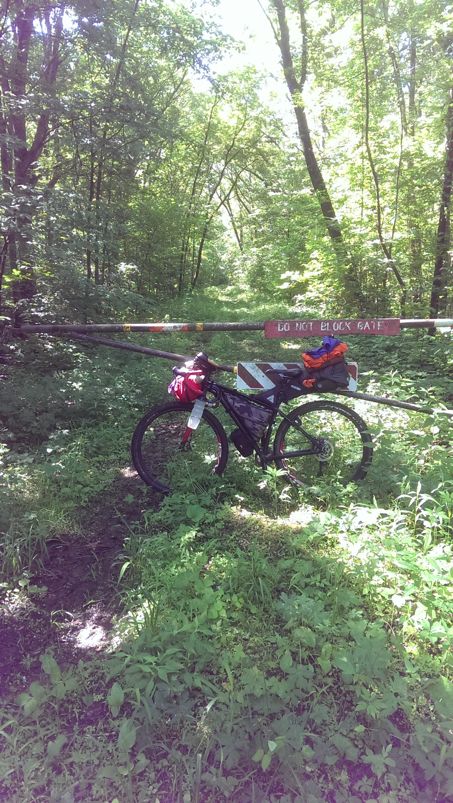 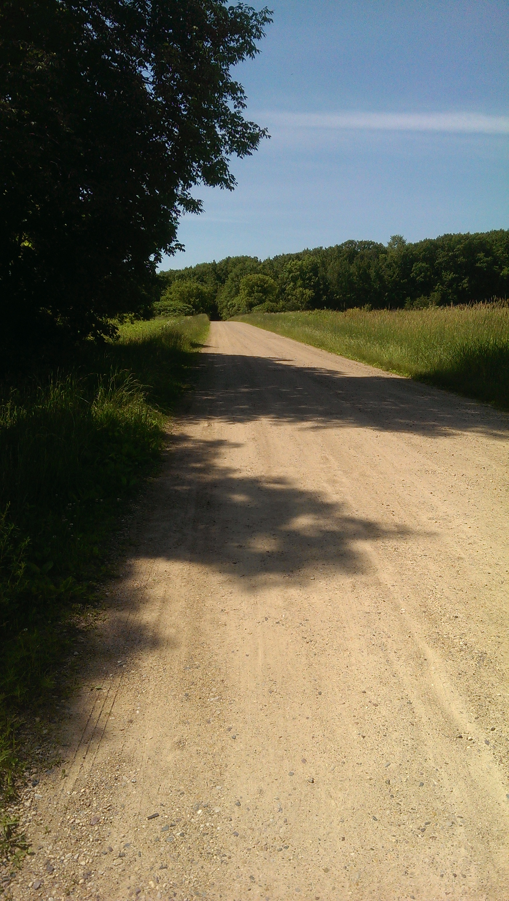 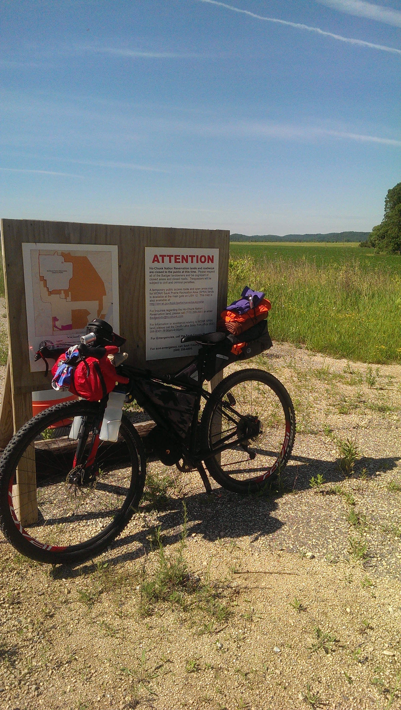 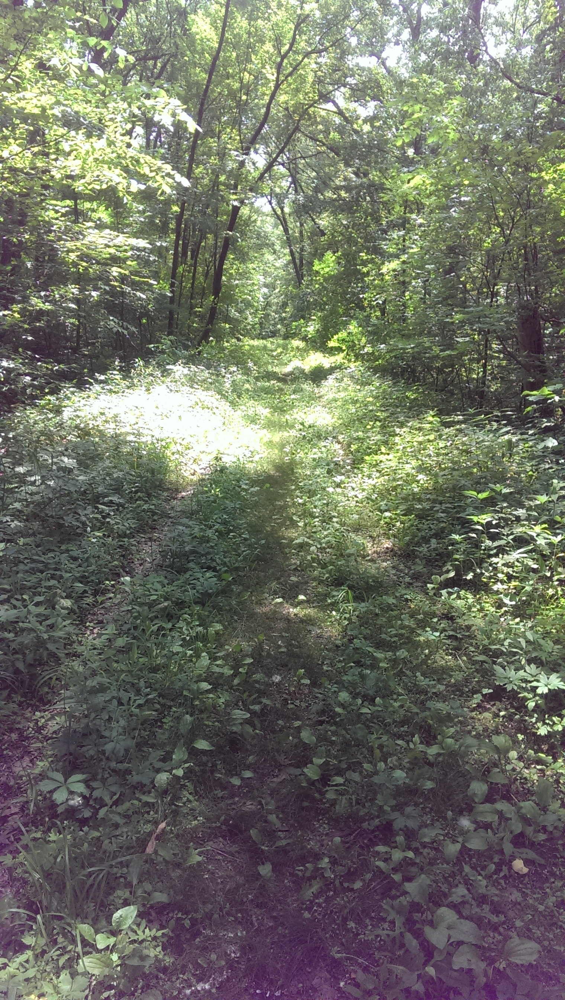 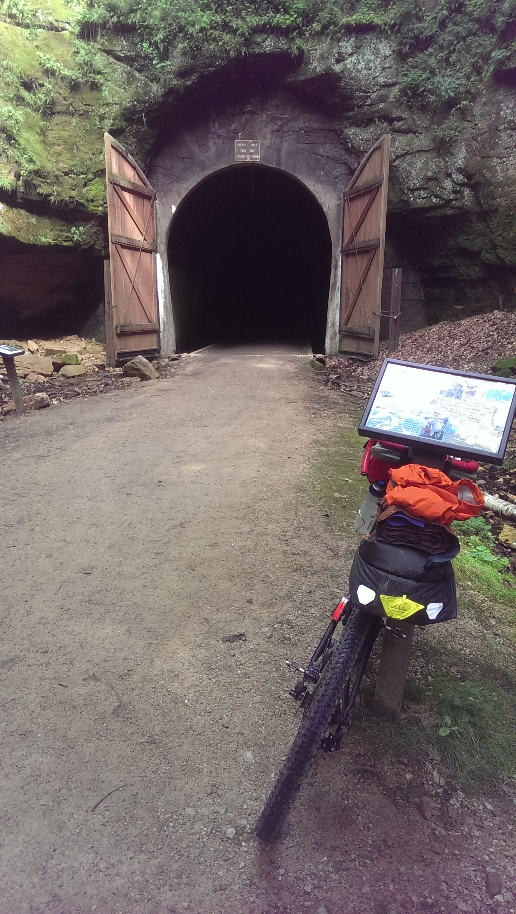 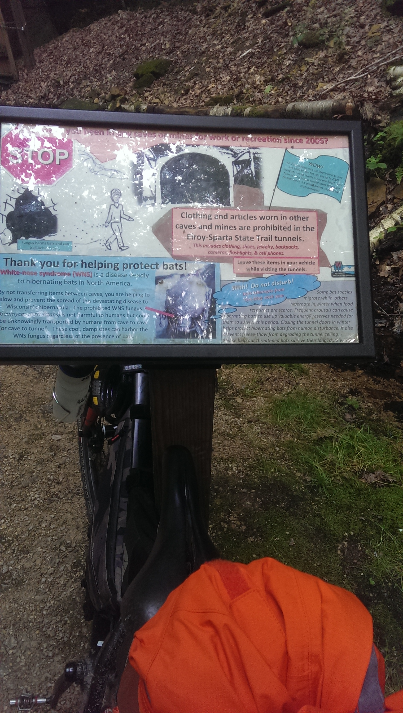 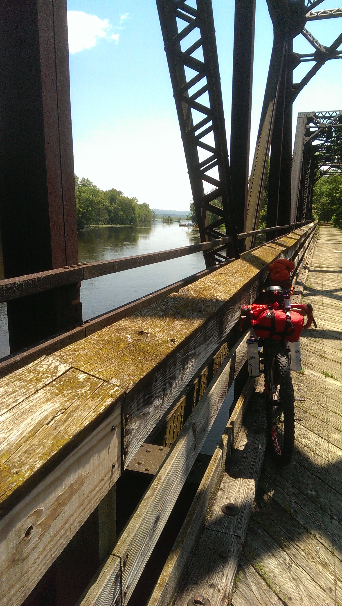 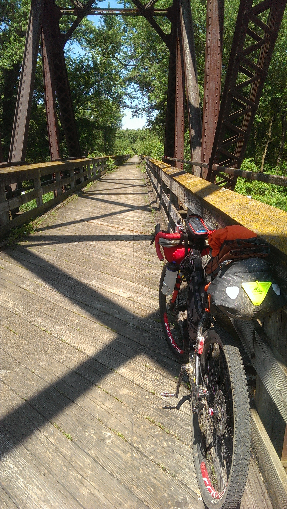 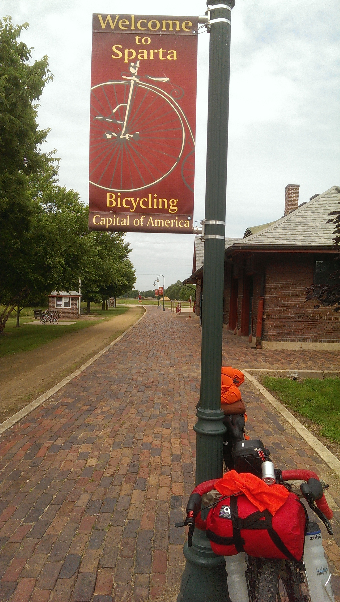 |
3 Days, 3 Hundred(06/18 MADISON, WI) As a test of my bikepacking setup I set off to do a three day trip. The first question to answer was, where should I go? A couple decades ago a friend introduced me to lunch at the Trempealeau Hotel in Trempealeau, Wisconsin so why not make a return visit for lunch? Adding momentum to this idea is the fact I enjoy riding the car-free environment of bike paths. This trip allowed me to check out some of Wisconsin's most popular trails including the 400 State Trail, the Elroy/Sparta State Trail, the La Crosse River State Trail and the Great River State Trail. The highlight of this trip was between Sauk City and Devil's Lake State Park where the not-yet-completed Great Sauk State Trail takes you to the Sauk Prairie Recreation Area. From the recreation area there is an access path or perhaps horse path that leads to Burma Road and connects to South Lake Road leading to Devil's Lake State Park. The access path was slippery and mostly undisturbed when I arrived. From the opening in the gate the path climbs steeply to start and doesn't let up for about a quarter mile. It continues to rise less steeply for about another three quarters of a mile. If one includes the steep climb to reach the access gate to the path and the final peak on Burma Road, it amounts to an amazing four mile climb. Upon entering the access path I found myself in what appeared to be a fairyland with mayflies all a flutter around me. The path was slightly wet and slippery with mud causing my mountain bike tires to slip several times. Somehow, with astounding luck, I managed to keep upright and pedaled a very low gear. The path is almost perfectly straight with only the occasional ditch to navigate. Nothing any adventure or mountain bike couldn't handle while a road bike might have issues with the mud, rocks, roots and ruts. The path led to a gate, near but not at the top of the climb. After the gate was a nice gravel road with some potholes and other rough parts one wants to be attentive to avoid. The gravel road ends at South Lake Road which runs along the western edge of Devil's Lake State Park. Lunch at the Trempealeau Hotel on the second day of this trip was as awesome as I had remembered. It's a great place to hang out by the river and enjoy the day. I had, however, traveled a day and half and 150 miles to get there with a plan to return home the next day. So back to the Great River Trail which leads back to the La Crosse River State Trail, Elroy/Sparta Trail and Wilton where I would spend the night. The days trip for lunch will be more than 100 miles and tomorrows trip home would be another 98. It was a joy riding bike paths home and cutting through the Sauk Prairie Recreation Area on the same route used on the way out. I had no problems controlling my speed on the way down to the recreation area from Burma road. The trip was very successful, my camping gear worked well including a new tent. Cooking was perfect and I could carry more stuff than I need. I did at one point realize I wasn't eating enough and had to take a fast-food break. Other than that -- everything went as planned. |
Things to knowThe RouteAccess to water trail-side is limited on the Elroy/Sparta Trail. The only water trail-side is inside the DNR train depot buildings. These are locked outside of business hours. If you break camp early, be prepared for this. The 400 State Trail had awesome bike stations with access to a pump and water 24/7. CampingI stayed at the Village of Wilton Campground. There is a $7 fee for camping there and plenty of room for bicycle campers. Expect RVs and other campers on weekends. Even though it was seemingly full when I arrive, there was plenty of nice grass on which to pitch a tent available. The showers are coin operated and give you only 4 minutes for each quarter you feed it. If you go, look for opportunities to camp along the trail. Some of the villages along the 400 State Trail and the Elroy/Sparta State Trail offer camping for cyclists and other trail users. The village of Norwalk for example allows free tent camping in the village park. |